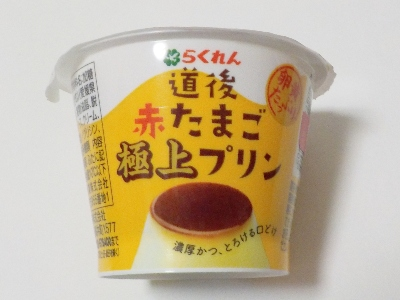
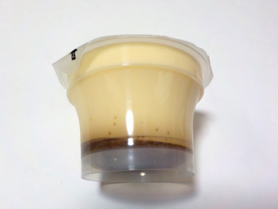

ルナ物産のらくれん道後赤たまご極上プリン。
2025/01/28

内容量100gの小さなプリンです。
ふわふわっとしていて、ムースクリームみたいって思いました。たまごの味は少ないですが、これはこれで美味しいのでいいかな。
甘めのクリームがとても良いプリンでした。
愛媛県松山市南高井町1577
2025/01/28

内容量100gの小さなプリンです。
ふわふわっとしていて、ムースクリームみたいって思いました。たまごの味は少ないですが、これはこれで美味しいのでいいかな。
甘めのクリームがとても良いプリンでした。
2024/01/13

鳥取県東伯郡にある大山乳業へのOEM商品です。
牛乳メーカー向けなのでミルク味が多めでカスタードは控えめでした。
プリンがマイルドな味なので、カラメルソース味がよくしました。